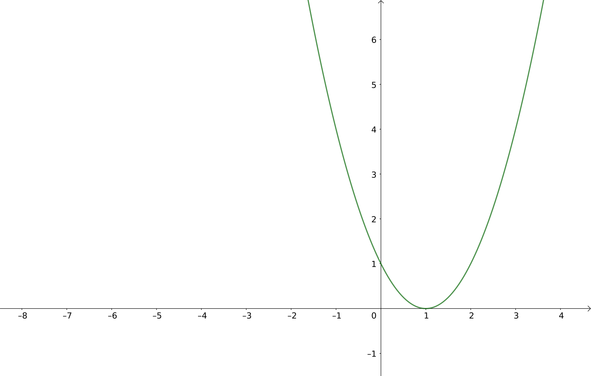

| \(x\) | \(x^2 + 1\) |
|---|---|
\(-\sqrt{3}\) |
\(4\) |
\(-\sqrt{2}\) |
\(3\) |
\(\sqrt{2}\) |
\(3\) |
\(\sqrt{3}\) |
\(4\) |
2 Teoria dos Conjuntos
2.1 Conjuntos, elementos e pertinência
Exercício 2.1
Escreva os elementos dos conjuntos abaixo:
\(\{ x : x \text{ é raiz do polinômio } x^4 - 5x^2 + 6 \}\)
\(\{ x^2 + 1 : x \text{ é raiz do polinômio } x^4 - 5x^2 + 6 \}\)
\(\{ x \in \{1, 2, 3, 4\} : x \text{ é raiz do polinômio } x^4 - 5x^2 + 6 \}\)
Resposta (a)
Precisamos usar algum método para resolver a equação
\[ x^4 - 5x^2 + 6 = 0 \]
Uma maneira: se fizermos \(y = x^2\), a equação fica
\[ y^2 - 5y + 6 = 0 \]
que tem raízes \(y = 2\) e \(y = 3\).
Daí, resolvendo \(2 = x^2\), temos \(x = \pm\sqrt2\).
E resolvendo \(3 = x^2\), temos \(x = \pm\sqrt3\).
Escrevendo o conjunto como uma enumeração dos elementos:
\[ \left\{ -\sqrt3, -\sqrt2, \sqrt2, \sqrt3 \right\} \]
Resposta (b)
Preste atenção: agora, não queremos as raízes, mas sim os valores de \(x^2 + 1\), onde \(x\) assume os valores das raízes.
O conjunto poderia ser escrito como
\[ \left\{ x^2 + 1 : x \in \{ -\sqrt3, -\sqrt2, \sqrt2, \sqrt3 \} \right\} \]
Calculando os valores de \(x^2 + 1\), temos:
Na tabela acima, há elementos repetidos, mas isto não pode acontecer em um conjunto. Então, a resposta é
\[ \left\{ 3, 4 \right\} \]
Em SETLX
Resposta (c)
Este item se parece com o item (a), mas há uma diferença importante: os valores de \(x\) — isto é, os elementos do conjunto — precisam pertencer a \(\{ 1, 2, 3, 4 \}\). Além disso, os valores de \(x\) precisam ser raízes do polinômio dado.
No item (a), vimos que as raízes são \(-\sqrt3, -\sqrt2, \sqrt2, \text{ e } \sqrt3\). Nenhuma delas pertence ao conjunto \(\{ 1, 2, 3, 4 \}\).
Conclusão: o conjunto do item (c) é vazio.
Em SETLX
Observe que a notação de SETLX divide a especificação do conjunto em três partes:
- A forma geral do elemento:
x; - O domínio de onde vêm os valores da variável:
x in {1, 2, 3, 4}; - A condição que deve ser satisfeita pelos elementos do conjunto:
x**4 - 5*x**2 + 6 == 0.
A notação do livro divide a especificação do conjunto em duas partes:
- A forma geral do elemento e o universo: \(x \in \{1, 2, 3, 4\}\);
- A condição que deve ser satisfeita pelos elementos do conjunto: \(x\) é raiz do polinômio \(x^4 - 5x^2 + 6\).
Lembre-se disso para poder implementar corretamente em SETLX os exemplos do livro.
Exercício 2.2
Escreva explicitamente os elementos dos seguintes conjuntos:
\(\{ x \in \mathbb{Z}: x^2 - 2x + 1 < 0 \}\)
\(\{ x \in \mathbb{Z}: 2 \leq x \leq 20 \text{ e } x \text{ é primo} \}\)
\(\{ x \in \mathbb{R}: x^2 - 2x = 0 \}\)
Resposta (a)
Usando seus conhecimentos de Geometria Analítica, você pode traçar o gráfico da função \(f : \mathbb{R}\to \mathbb{R}\) tal que
\[ f(x) = x^2 - 2x + 1 \]

O único valor de \(x\) para o qual \(x^2 - 2x + 1 \leq 0\) é \(1\) (que também é a única raiz desta função).
O conjunto deste item tem os inteiros (\(\mathbb{Z}\)) como universo, e \(1\) é inteiro. Então, o conjunto é \(\{ 1 \}\).
Resposta (b)
Este é o conjunto dos primos entre \(2\) e \(20\), inclusive:
\[ \{ 2, 3, 5, 7, 11, 13, 17, 19 \} \]
Em SETLX
// Função para testar se x é primo:
primo := procedure(x) {
// Para cada inteiro i entre 2 e teto (ceiling) de √x:
for (i in {2..ceil(sqrt(x))}) {
// Se o resto de x dividido por i for zero, x não é primo:
if (x % i == 0) {
return false;
}
}
// Se testou todos os valores de i sem dar resto zero, x é primo:
return true;
};
B := { x : x in {2..20} | primo(x) };
print("B = ", B);B = {3, 5, 7, 11, 13, 17, 19}Você verá, em outros exercícios, maneiras mais curtas para calcular os primos em um dado intervalo em SETLX. A função acima é a mais parecida com o que você vai aprender na sua disciplina de programação.
Resposta (c)
Basta achar as soluções da equação:
\[ x^2 - 2x = 0 \iff x(x - 2) = 0 \iff x = 0 \text{ ou } x = 2 \]
Então, o conjunto é \(\{ 0, 2 \}\).
Exercício 2.3
Determine a cardinalidade dos seguintes conjuntos:
\(\{ x \in \mathbb{Z}: -2 \leq x \leq 4 \}\)
\(\{ x \in \mathbb{Z}: 10 \leq x^2 \leq 100 \}\)
\(\{ x \in \mathbb{R}: x^4 - 5x^2 + 6 = 0 \}\)
\(\{ \sin(k\pi/7) : k \in \mathbb{Z}\}\)
Resposta (a)
Este é o conjunto \(A = \{ -2, -1, 0, 1, 2, 3, 4 \}\), que tem \(7\) elementos. Logo, \(|A| = 7\).
Resposta (b)
Este é o conjunto dos inteiros cujo quadrado está entre \(10\) e \(100\), inclusive.
Preste atenção: números negativos, quando elevados ao quadrado, resultam em números positivos.
Este conjunto é
\[ B = \{ -10, -9, -8, -7, -6, -5, -4, 4, 5, 6, 7, 8, 9, 10 \} \]
e \(|B| = 14\).
Em SETLX
E se os limites não fossem \(10\) e \(100\)?
Vamos fazer uma função mais geral, que recebe dois valores (minimo e maximo) e retorna o conjunto
\[ \left\{ x \in \mathbb{Z}: x \in \{ -\sqrt{\texttt{maximo}}, \ldots, +\sqrt{\texttt{maximo}} \} \text{ e } \texttt{minimo} \leq x^2 \leq \texttt{maximo} \right\} \]
Leia com atenção a definição acima. Por que o domínio é \(\{ -\sqrt{\texttt{maximo}}, \ldots, +\sqrt{\texttt{maximo}} \}\)?
calcular := procedure(minimo, maximo) {
extremo_esquerdo := -floor(sqrt(maximo));
extremo_direito := floor(sqrt(maximo));
return {
x :
x in { extremo_esquerdo..extremo_direito } |
minimo <= x**2 && x**2 <= maximo
};
};
// Vários conjuntos, com valores diferentes:
print("B = ", calcular(10, 100));
print("B2 = ", calcular(5, 50));
print("B3 = ", calcular(0, 5));
print("B4 = ", calcular(0, 0));
// B5 está correto?
print("B5 = ", calcular(10, 0));
print("\n");
// Nossa função não é muito robusta.
// Ela quebra se maximo for negativo. Por quê?
print("B6 = ", calcular(-20, -10));B = {-10, -9, -8, -7, -6, -5, -4, 4, 5, 6, 7, 8, 9, 10}
B2 = {-7, -6, -5, -4, -3, 3, 4, 5, 6, 7}
B3 = {-2, -1, 0, 1, 2}
B4 = {0}
B5 = {}
Error in "print("B6 = ", calcular(-20, -10))":
Error in "calcular(-20, -10)":
Error in "extremo_esquerdo := -floor(sqrt(maximo))":
Error in "-floor(sqrt(maximo))":
Error in "floor(sqrt(maximo))":
Error in "sqrt(maximo)":
Result of this operation is undefined/not a number.
Replay:
2.4: sqrt(maximo) FAILED
2.3: maximo <~> -10
2.2: sqrt <~> procedure(x) { /* predefined procedure `sqrt' */ }
2.1: floor <~> procedure(numberValue) { /* predefined procedure `floor' */ }
1.8: calcular(-20, -10) FAILED
1.7: -10 <~> -10
1.6: 10 <~> 10
1.5: -20 <~> -20
1.4: 20 <~> 20
1.3: calcular <~> procedure(minimo, maximo) { extremo_esquerdo := -floor(sqrt(maximo)); extremo_direito := floor(sqrt(maximo)); return {x : x in {extremo_esquerdo .. extremo_direito} | minimo <= x ** 2 && x ** 2 <= maximo}; }
1.2: "B6 = " <~> "B6 = "
1.1: print <~> procedure(*value) { /* predefined procedure `print' */ }
Resposta (c)
Este é o conjunto \(A\) do Exercício 2.1 (a), que tem \(4\) elementos. logo, \(|A| = 4\).